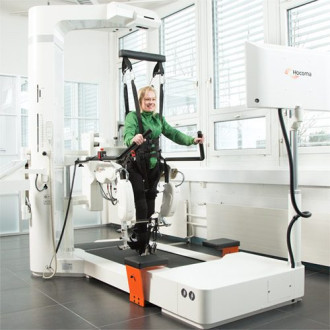
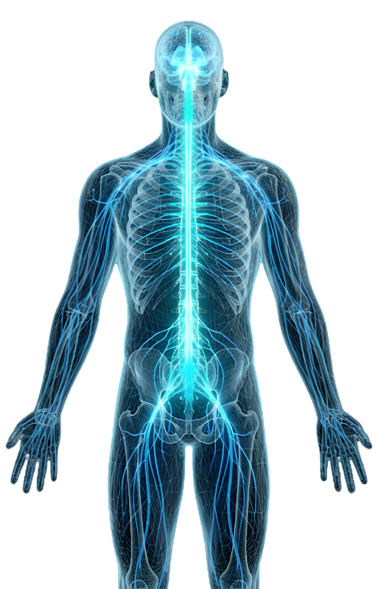
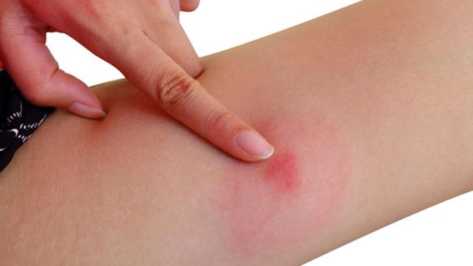

Farklı branşlarda uzman hekim kadromuz ve ileri teknoloji donanımımızla, size en doğru tedaviyi sunmak için buradayız.

Online sağlık hizmetlerimizle randevunuzu kolayca planlayın, tahlil sonuçlarınıza anında ulaşın veya hekimlerimizi inceleyin.
Online işlemler ile hızlı ve kolay ulaşım.
Sağlığınızla ilgili merak ettiğiniz tüm konularda uzmanlarımızın hazırladığı içeriklere göz atın.

